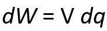
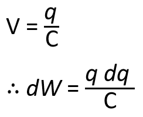
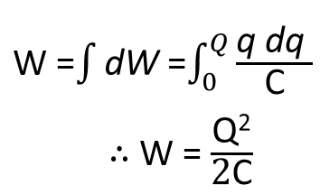

HOME BLOG EBOOKS ABOUT CONTACT SHOP
We know that charging a capacitor involves transferring electrons from one plate of the capacitor to the other. To do this the battery has to expend some energy. In a charged capacitor, this energy is stored in the form of an electrostatic field (whole other discussion). On discharging the capacitor, the field collapses and the stored energy is released.
By definition, we know that the potential difference is the work to be done inorder to move 1 coulomb of charge from one point to another. Then the work done transferring an infinitesimal amount of charge dq from the negative to the positive plate when a voltage V is applied to capacitor (without series resistor) is simply,

The work done is a variable quantity, because as the electrons accumulate it becomes more and more difficult to push further electrons onto the plate and therefore more work needs to be done. Similarly, Voltage across a capacitor is also a function of charge accumulated on the plates (refer Capacitor). Hence the incremental work can be expressed as,

To find the total work done, we need to integrate this quantity from 0 to the maximum charge Q.

Had there been a resistor in series with the capacitor, a portion of the energy expended by the battery would have dissapated as heat